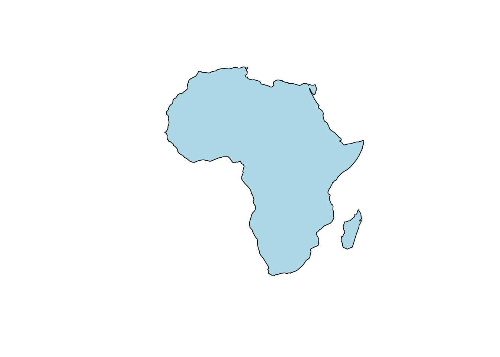

Chapter 4 Chapter 4 Spatial data types with focus on real examples
4.1 Overall goal of the chapter
Previous chapter provided a short recap of the R basics that are necessary to succesfully work through the geospatial training that has been drawn up in this book. This section will start with the very basics of geospatial mapping: the 4 different types of spatial data types that you will encounter.
The goal of any spatial map is to model reality, whether this is on the scale of a house, a neighbourhood, a country or a continent. Depending on the topics you’re interested in, this could be focussed on disease cases, landcover dynamics, location of schools and so on. The opportunities are endless. All the R software needs is information to visualise spatial data in a digital format. This is achieved by loading different spatial data types, which together form a model of reality. This section presents the four main data types: points, lines, polygons and rasters.
–> interactive image with a different layer for points, lines, polygons and rasters (need help doing this, without the need to load data first..)
#mapview(list(africapitals, afrihighway),
# zcol = list(‘pop’,‘Name’),
# legend = list(TRUE, FALSE),
# color = list(NULL, ‘red’),
# label = list(paste(africapitals\(countryname,':',africapitals\)capitalname),
# afrihighway$Name) )
All spatial data types require a spatial reference frame or coordinate system identification to place data in the correct location in space. We will discuss this in more detail in chapter xxx. For now, just be aware that apart from your data file, additional data is necessary to place your points, lines, polygons and rasters in the correct location.
Please note that spatial data types can be stored in many different formats, from Shapefile (.shp + .dbf + .prj + …), to GeoPackage (.gpkg), to CSV files (.csv). This can be overwhelming sometimes. Don’t hesitate to contact the owner of the data or use google to find out more!
This chapter is written for beginners, who have basic knowledge of R and no experience with spatial data. If you are familiar with the basic spatial data types, you can move on to the next chapter where visualisation of data types are explained in more detail.
4.1 Learning objectives
- Describe the difference between points, lines, polygons and raster data types
- Identify data files from the four different spatial data types
- Open data files from the four different spatial data types in R
- Visualise data files from the four different spatial data types in R
4.1.1 List of episodes
4.2 4.1 Points
4.2 Learning objectives
- Identify point data files
- Open point data files
- Visualise point data files
Let’s take an imaginary walk outside. What do you see? Houses, cars, trees… All these objects have unique coordinates that can be used to identify their exact location. On a map, the objects can be drawn as points with their latitude and longitude coordinate indicating their exact location in relation to other objects and places. Depending on the scale of your map, points can represent anything from a house, health clinic, city or district. You, as the map creator, can decide the scale of your own map.
4.2.1 Example
Lets try and visualise the capital cities of Africa.
Just a quick reminder of the necessary packages
library(afrilearndata) #load afrilearndata package
#In case the data isn't loaded into your R environment automatically, they can be individually loaded using the codes below.
data(africountries) #borders of the African countries
data(africapitals) #location of the African capitals
data(afrihighway) #the main highways in Africa
data(afripop2000) #The population density accross Africa (Worldpop)We will start by downloading the necessary packages: sf package. This package is necessary to read in the spatial data files. tmap package. This package is necessary to create the maps.
#install.packages("sf") #install sf package
#install.packages("tmap") #install tmap package
library(sf) #load sf package
library(tmap) #load tmap packagePlease note that more information can be found about the different packages using the Help tools explained in chapter 3.8
Now, let’s look at the data file that contains information about the African capitals. A quick summary of the spatial aspects (geometry) of the datafile can be checked using the following code:
## Geometry set for 50 features
## Geometry type: POINT
## Dimension: XY
## Bounding box: xmin: -17.48 ymin: -29.31 xmax: 47.51 ymax: 36.84
## Geodetic CRS: WGS 84
## First 5 geometries:We can see from the results that the African capital data file contains 50 points (capitals) with geometry type POINT. Let’s print the first 6 rows of data, so we can see how the coordinates of each African captial is stored in the database.
## Simple feature collection with 6 features and 4 fields
## Geometry type: POINT
## Dimension: XY
## Bounding box: xmin: -0.2 ymin: -18.89 xmax: 47.51 ymax: 36.77
## Geodetic CRS: WGS 84
## capitalname countryname pop iso3c geometry
## 280 Abuja Nigeria 178462 NGA POINT (7.17 9.18)
## 308 Accra Ghana 2029143 GHA POINT (-0.2 5.56)
## 382 Addis Abeba Ethiopia 2823167 ETH POINT (38.74 9.03)
## 996 Algiers Algeria 2029936 DZA POINT (3.04 36.77)
## 1584 Antananarivo Madagascar 1463754 MDG POINT (47.51 -18.89)
## 2193 Asmara Eritrea 578860 ERI POINT (38.94 15.33)The capitals all have one latitude and one longitude value. The geometry of the point data is stored as POINT (Latitude, Longitude). On the location where the latitude and longitude overlap, a point will be drawn when POINT data is visualised.
Please note that this database also includes the population of the capital as a seperate data column.
Let’s now visualise the African capitals by plotting their geometry using the tmap package.
The tmap package works similar to the ggplot package. You need to first specify the data file you want to visualise using tm_shape(), after which the exact format of the spatial data can be specified. As we are working with point data in this example, the tm_dots() function is used. As with ggplot, there is a lot of flexibility in the colouring, shapes and sizes of the dots. For example, the dots can be turned red and labelled with the name of the city.
# tm_shape(africapitals) +
# tm_dots("red")+ # displaying the point geometry as red dots
# tm_text("capitalname", size=0.7 ) #adding the name As you can see in the example above, the labelling makes the image messy. In these instances it is important to think about the message you are trying to convey. If the labelling is essential, you can look up the help section of the ‘tm_text’ using the help tool and play around with the different options to clean up the image.
4.2.2 Exercise 1
In this first exercise, we will use the same African capital data as our example. Below, We have visualised all capitals with > 1.400.000 people using green squares of size 1. However, the code isn’t working. Can you find the four mistakes?
Hint: if you get stuck, look at ‘?tm_dots’
#africapitals_ex1=africapitals %>%
# filter(as.factor(`pop`) > 1.400.000)
#tm_shape(africapitals_ex1) +
# tm_dots("green", size=0.5)Answer:
In the initial filter, as.factor needs to be changed to as.numeric
Dots in 1.400.000 need to be removed
The shape of the dots need to be specified as squares using shape=22
The size of the points needs to be 1.
4.2.3 Exercise 2
We will now use a different data type. We will download the locations of the big universities in Africa using open street map.
4.3 4.2 Lines
4.3 Learning objectives
- Identify line data files
- Open line data files
- Visualise line data files
In previous episode we looked at point data on a map. We are often interested in how these different points on a map are connect to eachother. Roads, rivers and flight pathes are just a few of the many ways that lines are used. Lines are one dimensional data which are drawn using points (and thus point data) connected to eachother in a set order. Depending on the detail of the lines, more or less points can be used.
4.3.1 Example
For this example, we will look at the trans african highway network. Let’s start by looking at a quick summary of the spatial aspects (geometry).
## Geometry set for 100 features
## Geometry type: LINESTRING
## Dimension: XYZ
## Bounding box: xmin: -17.38929 ymin: -33.95247 xmax: 43.13781 ymax: 37.08586
## z_range: zmin: 0 zmax: 0
## Geodetic CRS: WGS 84
## First 5 geometries:The results show that the African highway network contains 100 lines with geometry type LINESTRING.
Let’s now print the first 6 rows of data to see how line data is stored.
## Simple feature collection with 6 features and 1 field
## Geometry type: LINESTRING
## Dimension: XYZ
## Bounding box: xmin: -17.36938 ymin: 14.76957 xmax: -6.800537 ymax: 33.98436
## z_range: zmin: 0 zmax: 0
## Geodetic CRS: WGS 84
## # A tibble: 6 x 2
## Name geometry
## <chr> <LINESTRING [°]>
## 1 Western Sahara (Morocco… Z (-16.94778 21.34438 0, -16.85303 21.96343 0, -16.5…
## 2 Mauritania Border- Daka… Z (-17.36938 14.76957 0, -16.9519 14.77488 0, -16.73…
## 3 Nouakchott- Senegal Bor… Z (-15.81069 16.52036 0, -16.11694 16.72039 0, -16.1…
## 4 Western Sahara Border- … Z (-15.99128 18.08646 0, -16.01807 18.49003 0, -16.1…
## 5 Marrakesh- Western Saha… Z (-12.95837 27.67623 0, -12.7002 28.0041 0, -12.128…
## 6 Rabat- Marrakesh Link Z (-8.12439 31.79238 0, -8.02002 31.8589 0, -7.91564…Line data contain a string of data points with latitude and longitude: LINESTRING(Latitude1, Longitude1, Latitude2, Longitude2, Latitude3, Longitude3,.. ). During mapping, these points are connected to form a line.
Lets visualise these linestrings in red by plotting their geometry using the tmap package.
# tm_shape(afrihighway) +
# tm_lines("red") #similar to tm_dots colour of the lines can be specified.Please check out the help section to familiarise yourself with the many layout options available.
Now we can add the capitals from previous episode in blue
# tm_shape(africapitals) +
# tm_dots("blue", size=0.5)+
# tm_shape(afrihighway) +
# tm_lines("red") # displaying the point geometry as red dotstm_shape() before the use of tm_dots() and tm_lines().
Please note that the order of tm_dots() and tm_lines() matters. If you want the points overlaying the lines, it should be placed after the lines coding and visa versa.
4.3.2 Exercise 1
In the below exercise we have tried to visualise all the capitals and only the roads starting with the letter ‘b’. However, we have messed up the order of the code. Can you rearrange the code?
4.3.3 Exercise 2 (rivers in Africa, flight paths?)
- make this slightly more complicated by selecting rivers than are at least 100 km long?
4.4 4.3 Polygons
4.4 Learning objectives
- Identify polygon data files
- Open polygon data files
- Visualise polygon data files
If a line has the same first and last coordinate, this creates a closed figure: a polygon. Similar to lines, depending on the detail of the map, more or less points can be used to create a polygon.
Polygons are two dimension data. Examples include country boundaries and continent outlines.
Often times one polygon is not sufficient to visualise complicated shapes. Several polygons are necessary: these shapes are called mulipolygons. The different polygons in one data row indicate either areas to include or exclude from the final image.
For example the continent outline of Africa is a multipolygon.

- One polygon is used to visualise mainland of Africa. An additional polygon is used for Madagascar. Together they represent the whole African continent.
–> This might be a simple polygon and not a multipolygon… An example of a multipolygon where areas are excluded is the country border of South Africa. Lesotho is entirely surrounded by South Africa. If we want to visualise South Africa, we need to make sure that the Lesotho area is excluded. Visualisation of South Africa therefore requires two polygons, one to outline the outer borders and one to highlight the area to exclude (Lesotho country borders).
#africountries_ex=africountries %>%
# filter(`name` == "South Africa")
#plot(st_geometry(africountries_ex), col = "lightblue") - As you can see in the image above, when the border lines of South Africa are visualised, a white area is visible inside the country (representing Lesotho), which is not part of South Africa.
4.4.1 Example
## Geometry set for 51 features
## Geometry type: MULTIPOLYGON
## Dimension: XY
## Bounding box: xmin: -17.62504 ymin: -34.81917 xmax: 51.13387 ymax: 37.34999
## Geodetic CRS: WGS 84
## First 5 geometries:The country border file contains 51 country outlines with geometry type MULTIPOLYGON.
If we print the first 6 rows of data, we can see how each country border is stored in the database
## Simple feature collection with 6 features and 11 fields
## Geometry type: MULTIPOLYGON
## Dimension: XY
## Bounding box: xmin: -17.06342 ymin: -13.25723 xmax: 51.13387 ymax: 27.65643
## Geodetic CRS: WGS 84
## name name_long pop_est gdp_md_est
## 1 Tanzania Tanzania 53950935 150600.0
## 2 W. Sahara Western Sahara 603253 906.5
## 11 Dem. Rep. Congo Democratic Republic of the Congo 83301151 66010.0
## 12 Somalia Somalia 7531386 4719.0
## 13 Kenya Kenya 47615739 152700.0
## 14 Sudan Sudan 37345935 176300.0
## lastcensus income_grp iso_a3 geometry
## 1 2002 5. Low income TZA MULTIPOLYGON (((33.90371 -0...
## 2 NA 5. Low income ESH MULTIPOLYGON (((-8.66559 27...
## 11 1984 5. Low income COD MULTIPOLYGON (((29.34 -4.49...
## 12 1987 5. Low income SOM MULTIPOLYGON (((41.58513 -1...
## 13 2009 5. Low income KEN MULTIPOLYGON (((39.20222 -4...
## 14 2008 4. Lower middle income SDN MULTIPOLYGON (((24.56737 8....
## name_fr name_pt name_af
## 1 Tanzanie Tanzânia Tanzanië
## 2 Sahara occidental Saara Ocidental Wes-Sahara
## 11 Congo-Kinshasa Congo - Kinshasa Demokratiese Republiek van die Kongo
## 12 Somalie Somália Somalië
## 13 Kenya Quênia Kenia
## 14 Soudan Sudão Soedan
## name_sw
## 1 Tanzania
## 2 Sahara Magharibi
## 11 Jamhuri ya Kidemokrasia ya Kongo
## 12 Somalia
## 13 Kenya
## 14 SudanGeometry data contains a list within multiple polygons that are represented as data points with latitude and longitude. These points are connected to form multiple polygons which are either used to include or exclude areas from the final image. The geometry of the multipolygon data is stored as MULTIPOLYGON (((Latitude1, Longitude1, Latitude2, Longitude2, Latitude3, Longitude3,.. ),(Latitude1, Longitude1, ..)),(Latitude1, Longitude1, …))). This needs further clarification.
Lets visualise these multipolygons in black
# tm_shape(africountries) +
# tm_borders() #if only borders need to be visualised
#
# tm_shape(africountries) +
# tm_polygons() #if you want the image to specify the multipologon areaNow we can add the capitals and highways from previous episodes
4.4.2 Exercise 1
Multiple choice to identify if datafiles contain point, line or multipolygon geometry -need to identify two different datafiles to use. –> list of data : the students need to identify what kind of geometry type the data file contains –> Visual example: the students need to identify what kind of geometry type the data file contains that is visualised in the example.
a Point data b Line data c Multipolygon data d All of the above
If wrong: go back (explain why wrong)
4.4.3 Exercise 2 (different data: game reserves)
Visualise the Malawi country border in black and district borders in green.
Points, lines and polygons are grouped together as vector data. Several points together can form a line and several lines together form a polygon. They are all dependent on coordinates and their datafiles look very similar. Rasters are a group of their own. They are made up of a grid of pixels, with each grid containing values.
4.5 4.4 Rasters
4.5 Learning objectives
- Explain the difference between vector and raster data
- Identify raster data files
- Open raster data files
- Visualise raster data files
Episode 1 to 3 are focussed on vector data. Vector data uses points, lines, polygons to model the real world.
I extracted the text below. Needs to be re-written.
Raster data is a matrix of grid cells. Each cell represents a geographical location and contains a value that represents a characteristict of that region [ref]. Represents large areas with continuously changing values.
–> image of a simple raster: with data
Raster data is used when displaying information that is continuous across an area and cannot easily be divided into vector features(vectors aren’t very good at representing features that are not homogeneous). examples: population density, landcover variation, elevation.
Rasters are often backdrop for vector data.
Raster data is extracted from eg. satellite imagery, drone imagery, surveys,
Depending on the number of grid cells, this can result in a smooth image, or visualisation of individual grid cells. Raster datasets can become potentially very large because they record values for each cell in an image. As resolution increases, the size of the cell decreases. But this comes at a cost for speed of processing and data storage.
To read in raster data, we need to install and load the ‘raster’ package.
4.5.1 Example
To show raster data, in this example we use population data from 2000 and 2020.
The population raster data from 2000 contains 434 rows, 413 columns and a total of 179242 grid cells with geometry type RasterLayer .
If we print the first 6 rows of data, we can see how each country border is stored in the database
Why do you think the first 6 data points are empty?
Better to see a few more grid cells in the raster layer.
The raster layer consists of a matrix with values. The grid cells can be empty if no data is available.
Lets visualise the population data with the country borders (example from afrilearnr.
#tm_shape(afripop2020) +
# tm_raster(palette = rev(viridisLite::magma(5)), breaks=c(0,2,20,200,2000,25000)) +
#tm_shape(africountries) +
# tm_borders() Please note that population density data are highly skewed. To ensure both high and low density areas are clearly visible, we have to specify the data breaks manually.
Now we can add the capitals and highways from previous episodes
#tm_shape(afripop2020) +
# tm_raster(palette = rev(viridisLite::magma(5)), breaks=c(0,2,20,200,2000,25000)) +
#tm_shape(africountries) +
# tm_borders("white", lwd = .5) +
#tm_shape(afrihighway) +
# tm_lines(col = "red") +
#tm_shape(africapitals) +
# tm_symbols(col = "blue", alpha=0.4, scale = .6 )+
#tm_legend(show = FALSE)4.5.2 Exercise 1
4.5.3 Exercise 2 (different data: elevation data?)
4.6 Summary/key points
- Points are ..
- Lines are ..
- Polygons are ..
- Rasters are ..
4.7 4.5 Wrap up with final exercises
In this chapter we learned xxxx
Try to solve the exercises below tp ### 1 Visualise
4.7.1 2 User story
4.8 4.6 Further resources
If you are interested in learning more about the different spatial data types, please visit:
4.9 4.7 Feedback
- Request on what was useful to the reader (learner) and what can be improved: Is this necessary after each chapter? Feels slightly repetitive.